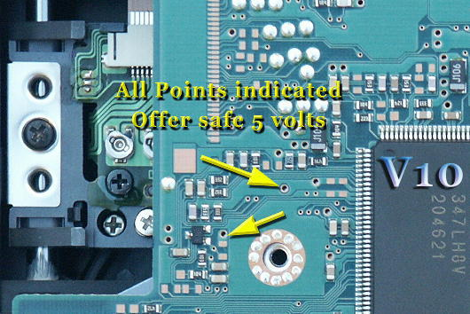
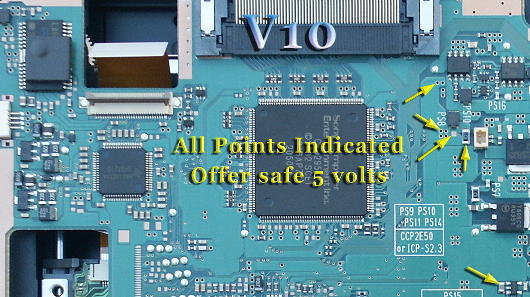
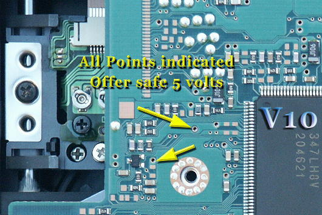
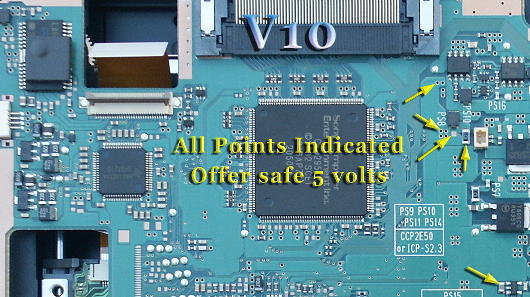

Firstly - the prevention - by far easier than the cure:
1) Carefully lift Pin17 of the LA6508 Chip,
2) Ensure no solder links it to the pad it was just lifted from,
3) Link Pin17 to 5 volts as demonstrated in the picture below.
Pin17 was connected to 12v which is suspected to be the cause of dead V9 & V10's when scratched or poor media is played in the station.

